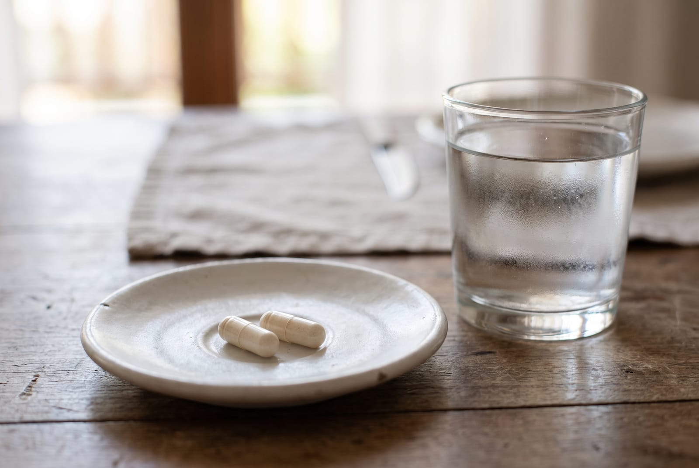
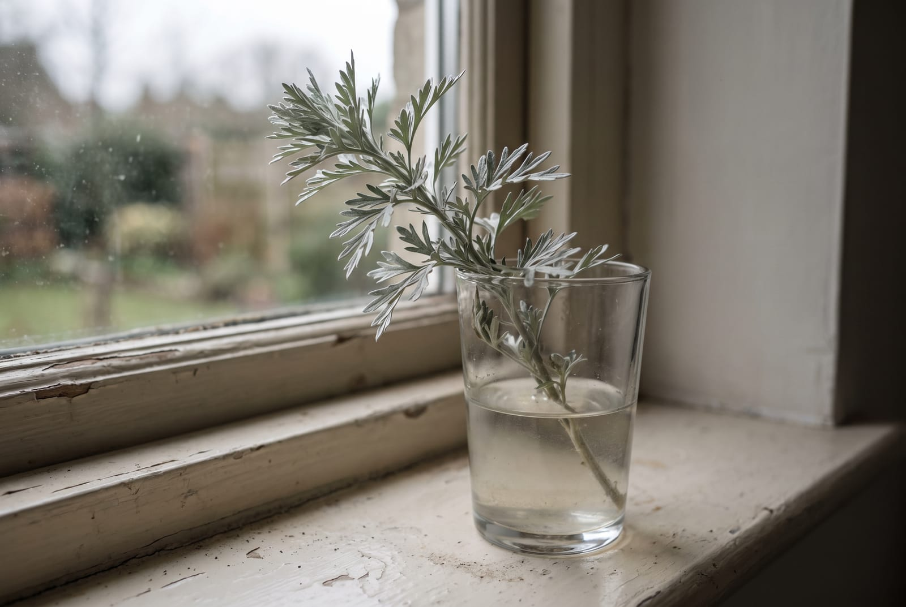
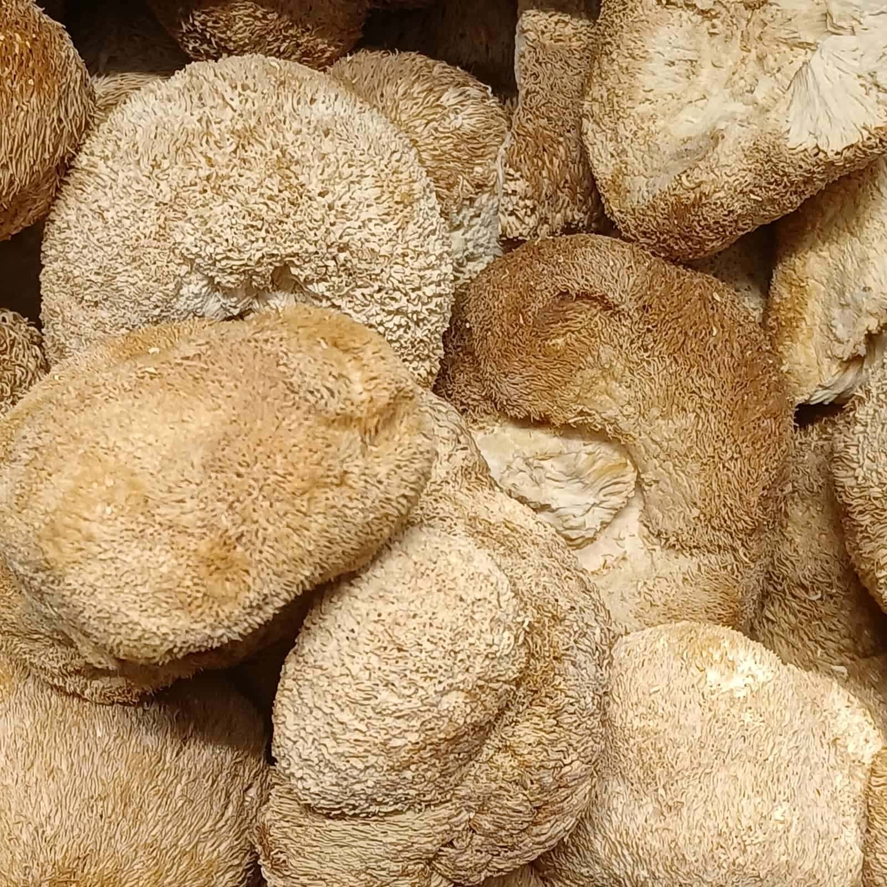
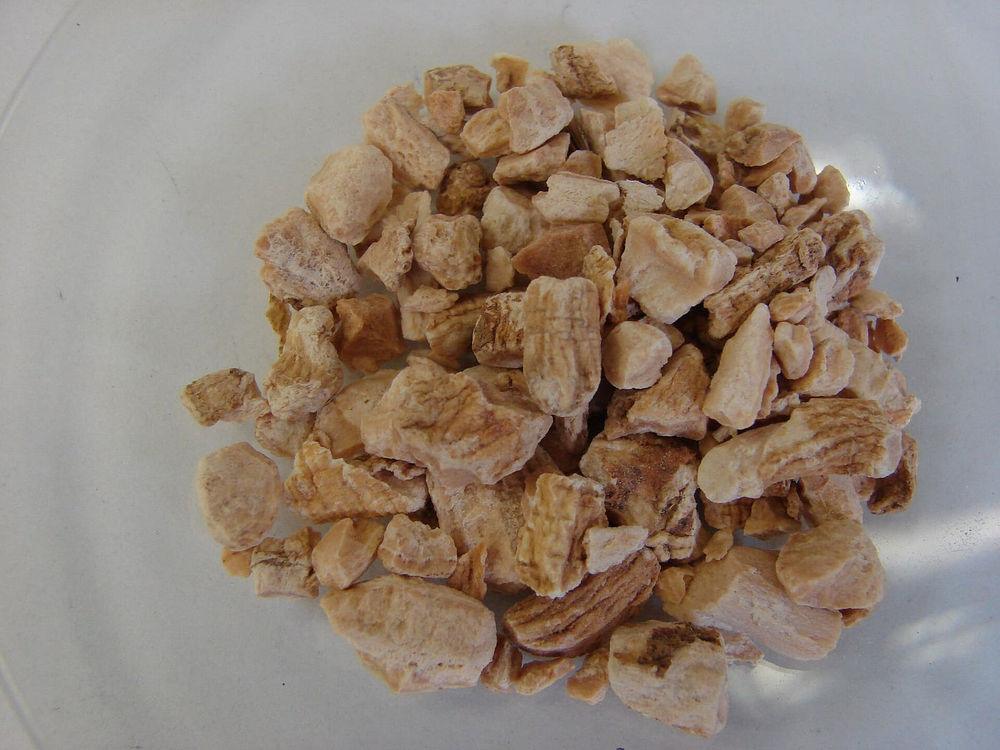

Know · Cautions
Who should not take what.
Every specification sheet on this site ends with a row headed Not for. This page gathers those rows into one table, family by family, so that you can read the whole shelf in one go instead of opening every product page in turn. It is standard public guidance and the cautions the listings themselves carry. It is not advice about you, and I am not the person to give you that.
By Reiss Davies Ausar10 September 202613 minute read

Behind the counter I get to ask questions. Somebody picks up a jar, and before it goes in a bag I ask whether they are pregnant, whether they take anything on prescription, whether anyone has ever mentioned their thyroid. It takes twenty seconds, and often enough it changes what they walk out with, or whether they walk out with anything at all.
Online I cannot ask. So the questions are printed instead, on every product page in a row headed Not for, and gathered here in one place. If you would rather read one page than forty, this is that page.
01What this page is, and what it is not
Everything below comes from one of three places, and I have tried to make clear which is which as I go.
- Standard public guidance. The cautions a pharmacist, a midwife or an NHS page would give you about a plant or a nutrient. Wormwood in pregnancy, iodine and an overactive thyroid, anticoagulants and a long list of botanicals. These are not house rules and they are not mine.
- The listing's own caution. Where the product listing carries a warning, we print it as it stands, even where it is oddly worded, and we say that is where it came from.
- The plain consequence of a gap. Where a listing does not itemise what is in a jar, nobody can check that jar against your prescription. Not you, not your pharmacist, not me. That is a reason to ask first rather than a caution about a plant.
What this page is not: a diagnosis, a piece of advice about your own body, or a substitute for asking somebody qualified. I sell food supplements from a shop on Smithdown Road. I am not clinically trained and I am not going to pretend otherwise on a page about safety, of all things.
If you take anything on prescription, the person to ask is your GP or your pharmacist, and the pharmacist is free and does not need an appointment. Take the jar with you. They will read the back of it faster than either of us could.
02A caution is not a claim turned round
This is the part I want to get straight before the table, because it is the way lists like this get misread, and the way some sellers intend them to be misread.
When a page says do not take this alongside a blood thinner, that is not a statement that the jar thins blood. It is a statement that this plant turns up on interaction lists, that the sensible course is to keep the two apart until somebody qualified says otherwise, and that the cost of being wrong sits with you rather than with me. A caution is a reason to stop. It is never a reason to start.
Read this page as a list of reasons to leave something on the shelf. If you find yourself reading it as a menu, close the tab.
I am labouring it because I have seen the trick done. A jar carries a warning about medication for blood sugar, and the warning is quietly doing the work a claim is not allowed to do. So: nothing on this page tells you what any of these plants does to a body. I have written separately about why I am not allowed to, and about the difference between a specification and a promise.
03The five questions I ask across the counter
In this order, and they take less time to answer than it takes to find a card reader.
- Are you pregnant, breastfeeding, or trying to conceive? If yes, almost nothing on my shelf is appropriate without a midwife or a GP saying so first, and several things are a flat no.
- Do you take anything on prescription? Anything at all, including the contraceptive pill. This is the question that changes the most outcomes.
- Has anyone ever mentioned your thyroid? Asked because five of my products are seaweed, and seaweed carries iodine.
- Is it for a child? If yes, the answer is no. None of it is for children.
- How long are you planning to take it? Three of these jars have an end date printed on them and are not meant to be a habit.

04The whole shelf, family by family
This is the summary. The sections after it go into the families that need a longer answer, and every product page carries its own version of the same thing in full.
| Family | The jars | Leave it alone, or ask first, if |
|---|---|---|
| Sea moss and the algae | Northern Soul, Seaking, Chondrus Crispus, Purple Mwani, Nu Heru | You have an overactive thyroid. You take thyroid medication of any kind. You are pregnant or nursing. It is for a child. Purple Mwani and Nu Heru carry their own printed cautions on top of that, set out in section five. |
| The oil | Omega DHA | You take warfarin or another anticoagulant. You are pregnant or breastfeeding, in which case ask first. It is for a child. You avoid particular oils, because the label does not print the source. |
| Bitters, and the jars with an end date | Decolonise, Gumbo Limbo, Parasite Cleanse Kit | You are pregnant, breastfeeding or trying to conceive. You have epilepsy or any history of seizures. It is for a child. You take any prescribed medicine, the contraceptive pill included. You intend to keep taking it after the printed course ends. |
| Mushrooms | Reishi, Chaga, Lion's Mane, Mycrodose | You react to mushrooms. You take medication that thins the blood, or insulin or another medicine for blood sugar. You have had kidney stones or have kidney disease, because of chaga and oxalate. It is for a child. You are pregnant or nursing, in which case ask first. |
| Roots and barks | Ginseng, Ashwagandha, Astragalus, Gotu Kola, Chasteberry, Chanca Piedra, Pau d'Arco, Acacia Bark, Anamu, Bugle | You are pregnant or breastfeeding: that applies across the whole row. It is for a child. You take an anticoagulant, medication after a transplant, or anything for the liver, blood pressure or blood sugar. You have an operation booked. Section eight breaks this row down jar by jar. |
| The multi-plant formulas | Detox Redox, Equill, Feminina, Mag Flux, Neptune, Nutropic, Pancrea, Prostrate, Respire, Test Drive | You are pregnant or breastfeeding. It is for a child. You take any prescribed medicine. Several of these listings do not itemise what is in the jar, so nobody can check it against a prescription, which is a reason to ask rather than to hope. Equill: anyone with liver disease. Neptune: valerian may make you drowsy, so do not drive or use machinery if you are affected. Mag Flux: yellow dock is a plant high in oxalate. Feminina: fenugreek is a legume and fennel belongs to the carrot and celery family, both known allergen groups. |
| The kits | 28 Day Kit, Cell Repair Kit, Menopause Kit, Men's Health Kit, Athletes Kit, Parasite Cleanse Kit | Anything above that rules out a single jar rules out the box that contains it. A kit is not a separate product, it is several of these jars in one bag. |
| The rocks | Elite Noble Shungite Stone, Shungite Pyramid, Shungite Water Stones | They are not food and they are not supplements. Do not put them in your mouth, and keep them away from young children, who put small hard things in theirs. |
One line applies to every row and I would rather write it once here than eleven times below. If you take a prescribed medicine of any kind, ask a pharmacist before you start anything on this list, and take the jar with you.
05Sea moss, iodine, and the oil
Five of my products are seaweed in one form or another, and seaweed takes up iodine from the water it grew in. That is the whole of the reason this family has a caution attached to it.
If you have an overactive thyroid, hyperthyroidism, none of the seaweed is for you. That is standard public guidance and it is not a close call. If you take thyroid medication of any kind, ask your GP or pharmacist first, and if they are content for you to take something, take Seaking rather than a gel, because Seaking is the one with a printed figure on it. 75 µg of iodine a capsule, 150 µg in a serving, which is the labelling reference value, the NRV. The gels carry no figure at all, for reasons I set out in a separate piece.

Pregnancy and nursing change the reference intakes, which is a conversation for a midwife or a GP rather than for a counter. Children: no, and keep the jar out of reach.
Two of the gels carry their own printed cautions and we print them as they stand. Purple Mwani says anyone pregnant or trying to conceive and anyone taking blood related medication should leave it alone. Nu Heru says anyone with low blood pressure, or taking medication to lower it, should do the same. I did not write either sentence and I am not going to quietly drop them because they cost sales.
The Omega DHA oil sits alongside this family and has one caution of its own worth repeating: if you take warfarin or another anticoagulant, ask before you start. There is also a gap on that label. It does not print what the oil is made from, so if you avoid particular oils, ring the shop before you buy rather than after.
06The bitters, and the jars with an end date
Decolonise has the longest list of anyone it is not for on the whole shelf, and it is the one I would read twice.
- Pregnancy and breastfeeding. No. Wormwood is not taken in either, and that is standard guidance rather than a house rule.
- Epilepsy, or any history of seizures. No. That caution follows wormwood wherever it appears.
- Children. No, and keep it out of reach.
- Any prescribed medicine, the contraceptive pill included. There is activated charcoal in the formula and charcoal can reduce how much of a tablet is taken up. Leave at least two hours either side, and speak to a pharmacist before you start rather than after.
- Anyone meaning to take it past the printed course. Two capsules a day for 25 days, then at least four months. The jar is 50 capsules, so the jar is the course.

I have written the long version of that one elsewhere, including why the gap is four months and why a jar that prints a limit is a better sign than a jar that does not.
Gumbo Limbo belongs in the same paragraph for a different reason: both of the schedules its listing prints are short courses with an end on them. When the days are up, stop. The Parasite Cleanse Kit contains a bitter, so everything above travels with it, and the box carries a 25 day cycle as printed on the listing.
07The mushrooms
Four products: Reishi, Chaga, Lion's Mane and Mycrodose, which has four fungi in it and therefore inherits all of their cautions at once.
Anyone who reacts to mushrooms should leave the whole family alone. That sounds obvious written down and it is the one people skip, because a capsule does not look like a mushroom. In Mycrodose there are four species and any one of them can be the one.

Two interaction cautions run through this family and both are standard. Reishi is routinely flagged in interaction lists for people taking medication that thins the blood. Chaga and cordyceps turn up on the lists for insulin and other medicines for blood sugar, and the Chaga listing carries its own line asking anyone in that position to watch their blood glucose closely. My preference is that you speak to a GP or pharmacist before you start rather than monitor and hope. Neither of those sentences tells you anything about what these fungi do, and neither is a reason to buy one.
One more, specific to chaga. It is one of the botanicals routinely flagged for oxalate content, so if you have had kidney stones, or you have kidney disease, do not start it without asking your GP. Children: no. Pregnancy and nursing: ask first.
08The roots, the barks, and the resin
This is the longest row in the table and it does not compress well, because the cautions are per plant rather than per family. Pregnancy, breastfeeding and children apply across all of it. What follows is what sits on top.

- Ashwagandha. Reports of liver injury have been recorded in people taking ashwagandha products, so anyone with a liver condition, or on any prescribed medicine, should ask first. It is also a nightshade, so leave it alone if you avoid those.
- Gotu Kola. The listing carries the longest caution on the shelf and we print it as it stands: not in pregnancy or breastfeeding, not with liver issues, a history of skin cancer or an operation coming up, and not with medication for the liver or for diabetes, or a diuretic.
- Astragalus. Not for anyone taking medication after an organ transplant without their specialist agreeing to it first.
- Pau d'Arco. Not alongside warfarin or another anticoagulant unless a GP has said otherwise.
- Chanca Piedra. Ask first if you take a diuretic or medicine for blood pressure or blood sugar. The listing also asks anyone trying to conceive to leave it alone, and that stays on the page.
- Anamu. Ask first if you take a blood thinner or have surgery booked.
- Bugle. The listing's own caution, as it stands: not with an underactive thyroid, low blood pressure or diabetes.
- Acacia Bark. The listing names no species, so nobody can give you a caution specific to the plant in the jar. That is itself the caution.
- Ginseng. Not alongside warfarin or another anticoagulant unless a GP has said otherwise. The listing carries a hormone-sensitivity caution: women with breast cancer, endometriosis or uterine fibroids should use it with caution and consult a doctor first. Insomnia is the most common side effect, and the listing's own advice is to lower the dose if it appears. Our listing does not say which Panax, and the page says so.
- Chasteberry. The listing names specific interactions and we print them: if you take a contraceptive pill, hormone replacement therapy, or medication for Parkinson's disease or for a psychiatric condition, ask your GP or pharmacist before you start.
Shilajit is the resin and sits on its own. Children: no. Pregnancy, nursing or any prescribed medicine: ask first. The one I would add is about provenance rather than about you. Raw resin bought loose from a market stall or carried back from a trip is a different thing from a purified, tested one, and we would not take it ourselves.
Test Drive deserves its own line because its listing states that the jar is for men only. It gives no reason and I am not going to invent one. It also names nitrates, blood pressure medication and heart medication, so if you take any of those, speak to your GP or pharmacist before you start. There is piperine in it, which is well known to change how the body takes up and clears some medicines, and that is a second reason to ask. It contains pine pollen, so anyone who reacts to pollen should leave it alone.
And the honest close. There are jars on my shelf whose listings name no plants at all. For those, the only caution I can give you is that nobody, me included, can check the jar against your prescription, because there is nothing printed to check. I would rather write that sentence than a comforting one.
Four sheets worth reading first
Not four recommendations. These are the four specification pages with the longest Not for rows on them, and if you are going to read one page before buying anything, read the row at the bottom of one of these.

Decolonise
£39.99The longest list on the shelf. Nine named ingredients, 50 capsules at 800 mg, 25 days then at least four months off. Not in pregnancy, not with epilepsy, not alongside medicine without asking.
Read the specification
Gotu Kola
£19.99The longest caution carried by a listing. Liver, skin cancer history, booked surgery, diabetes medication and diuretics all appear on it, and we print it as it stands.
Read the specification
Test Drive
£39.99The one that names medicines. Nitrates, blood pressure medication and heart medication are on its listing, along with a men only line it gives no reason for.
Read the specification
Seaking
£39.99The one with a number on it. 75 µg of iodine a capsule, 150 µg in a serving. If you need to count iodine rather than guess at it, this is the jar to count.
Read the specificationIf you are standing in front of a shelf somewhere else and none of this is printed on the jar in your hand, that is the answer to your question. Put it back, or ring 07946 806533 and read the label down the phone to me. Tuesday to Sunday, 10 to 6.

Reiss Davies Ausar
Founder and formulator at Herbase. Trading online since 2019 and behind the counter at 599 Smithdown Road, Liverpool, since August 2024. Author of three books on herbal practice. Book an hour with him if you want to go into more detail.